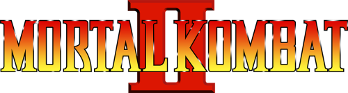
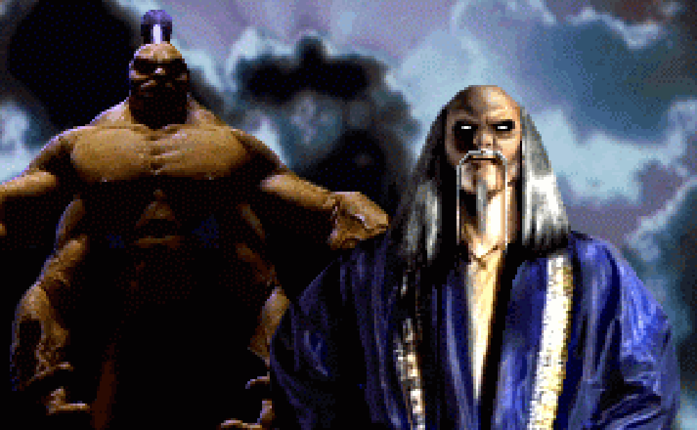
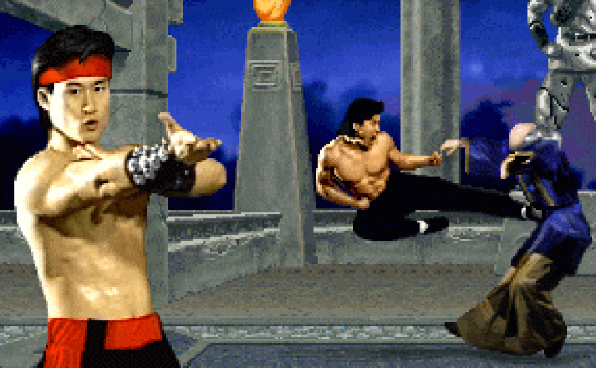
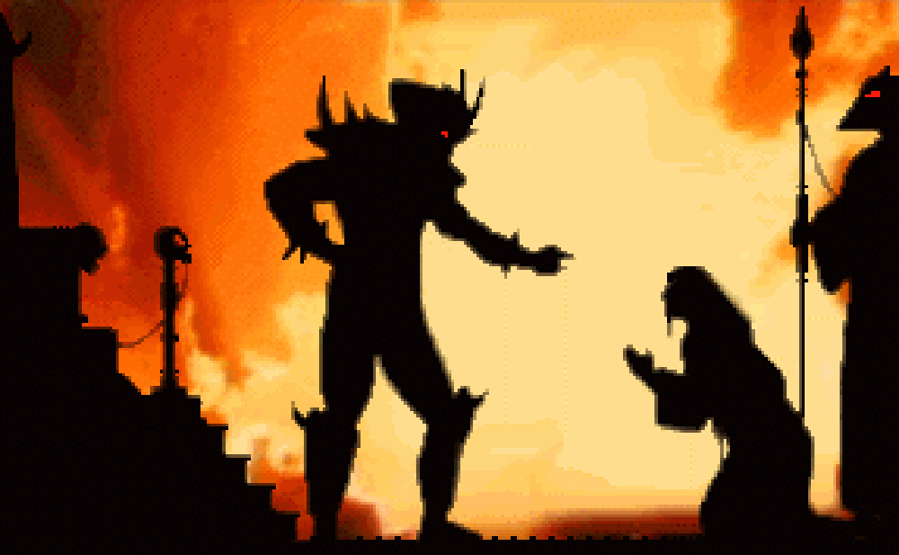
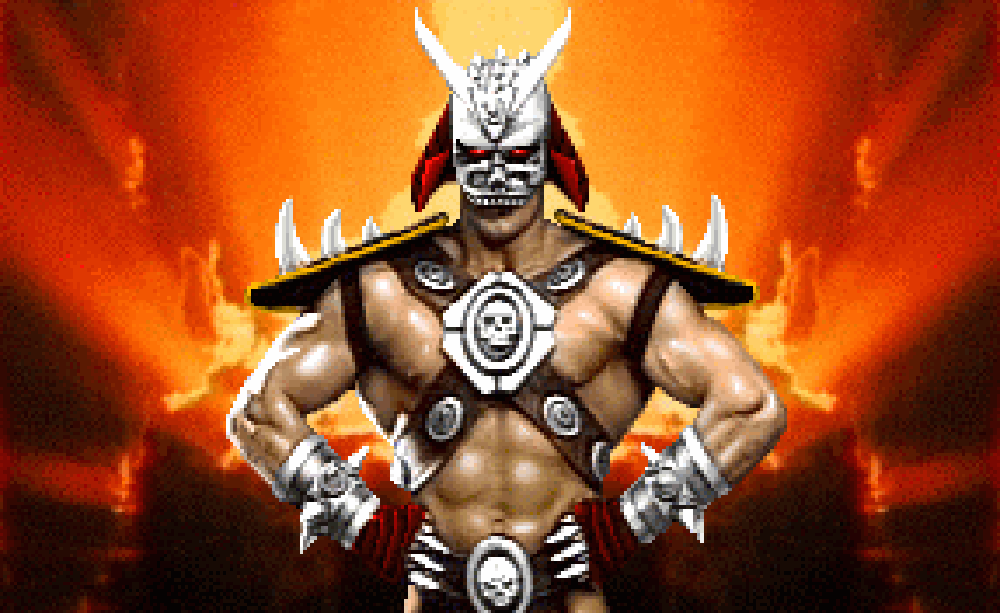

Choose Your Game

The Story

500 years ago, Shang Tsung was banished to the Earthrealm.
With the aid of Goro, a 2,000 years old half-human dragon mutant warrior,
his mission was to unbalance the furies and doom the planet to a chaotic existence.

By seizing control of the Shaolin Tournament, he tried to tip the scales of order towards chaos.
Only seven warriors survived the battles and Shang Tsung's scheme would come to a violent end at the hands of Liu Kang.

Facing execution for his failure and the apparent death of Goro,
Shang Tsung convinces Shao Kahn, the Outworld emperor, to grant him a second chance.

Shang Tsung's new plan is to lure his enemies to compete in the Outworld
where they will meet certain death by Shao Kahn himself.
MKKomplete